Aim#
To check the quality of nanopore data with the ZymoHMW mock DNA.
Conclusion#
There are some serious improvements in raw read accuracy between the fast, hac sup, and now hyp models. However, for some reason the improved raw read accuracy of the hyp(er) accuracy model does not improve assemblies consistently for all of the organisms.
Data availability#
https://github.com/Kirk3gaard/MicroBench
NP reads mapped to the refs overall (percent identity)#

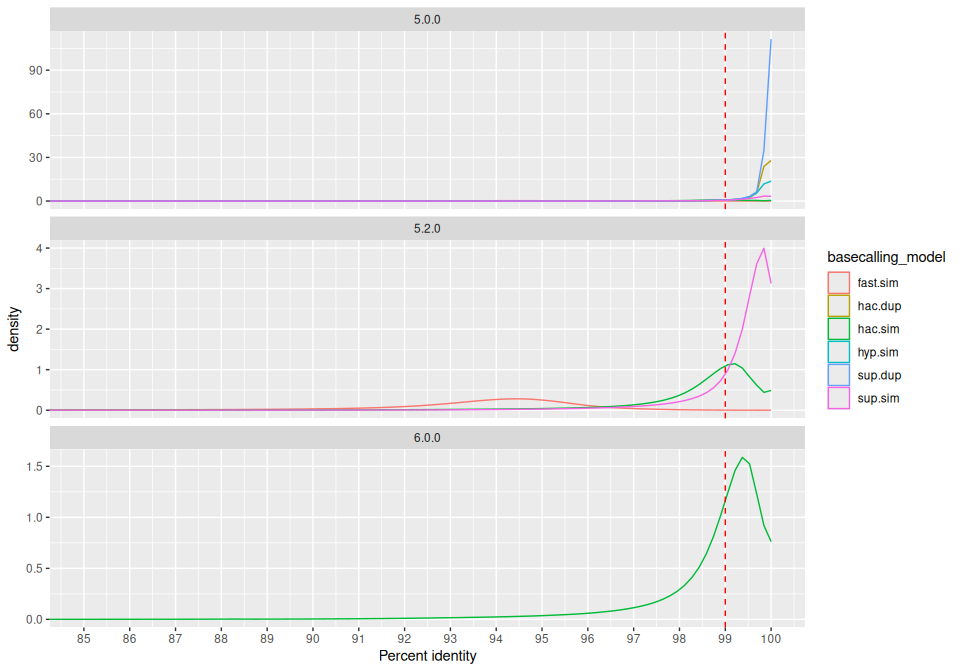
Longest perfect read#

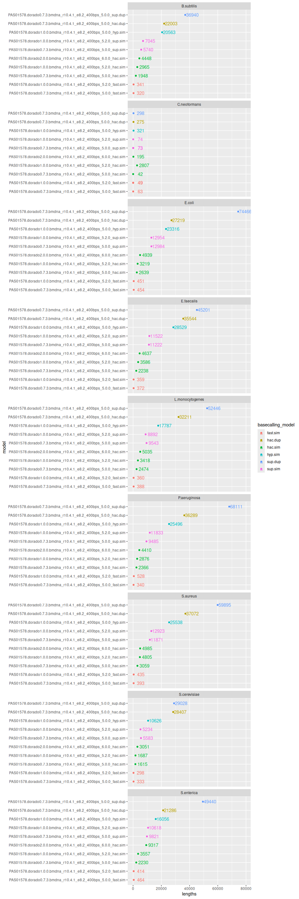
NP reads mapped to the refs overall (phred scale)#

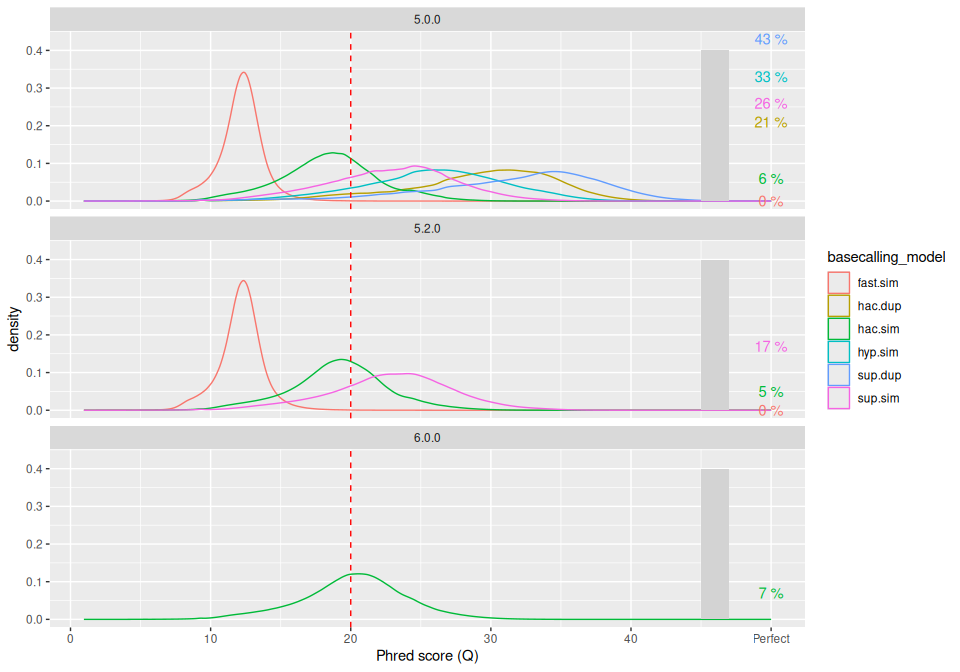
all modes#
Mismatch rate vs coverage#

Indel rate vs coverage#

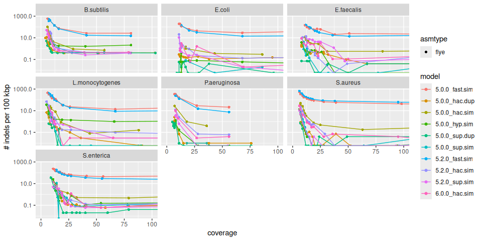
Mismatch rate vs coverage#

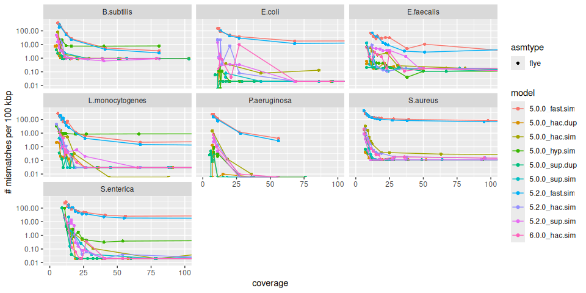
Fast mode#
Indel rate vs coverage#

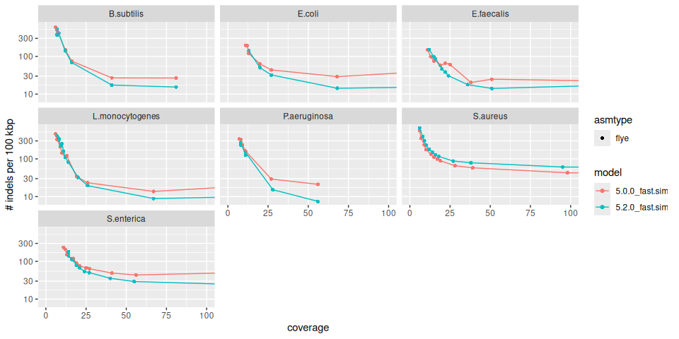
Mismatch rate vs coverage#

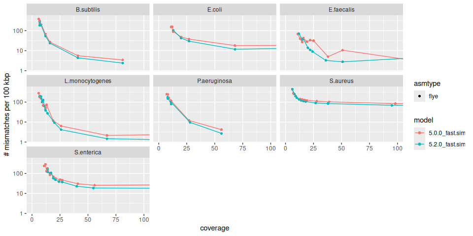
HAC mode#
Indel rate vs coverage#

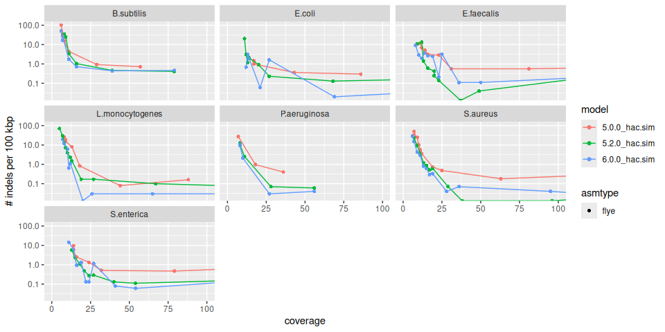
Mismatch rate vs coverage#

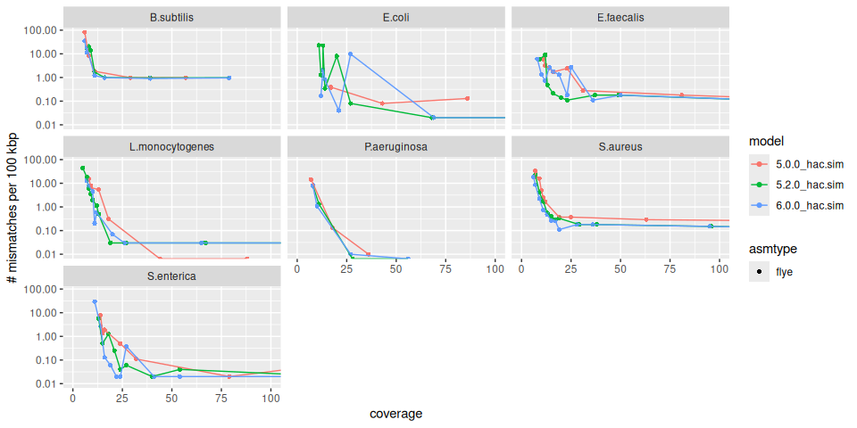
SUP mode#
Indel rate vs coverage#

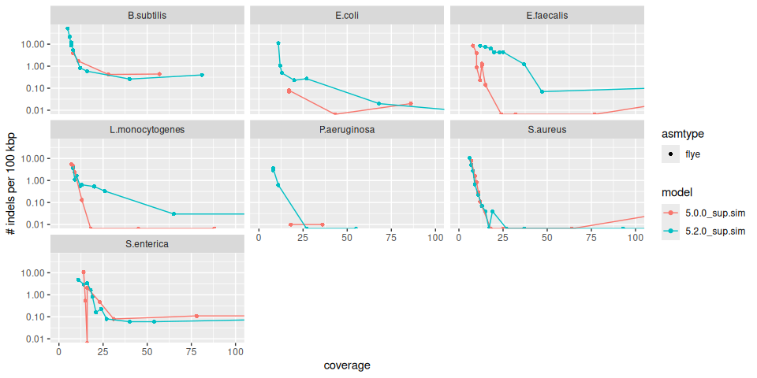
Mismatch rate vs coverage#

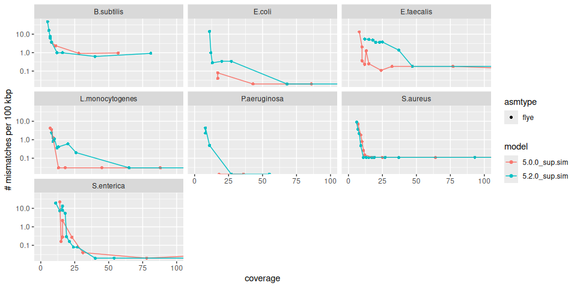
Duplex mode#
Indel rate vs coverage#

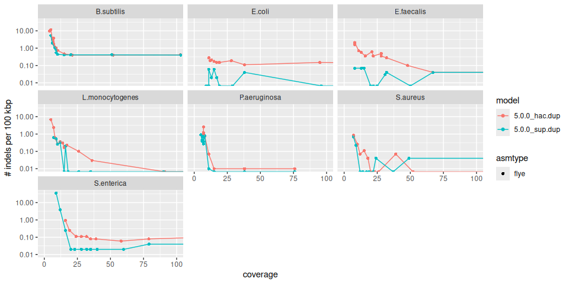
Mismatch rate vs coverage#

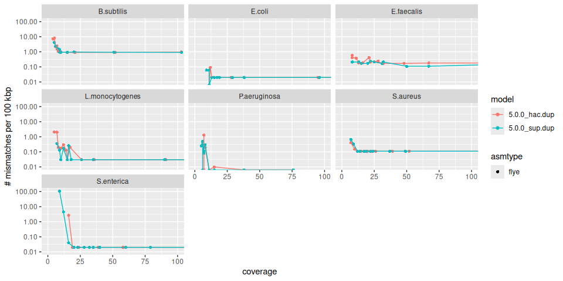
hyp mode vs sup#
Indel rate vs coverage#

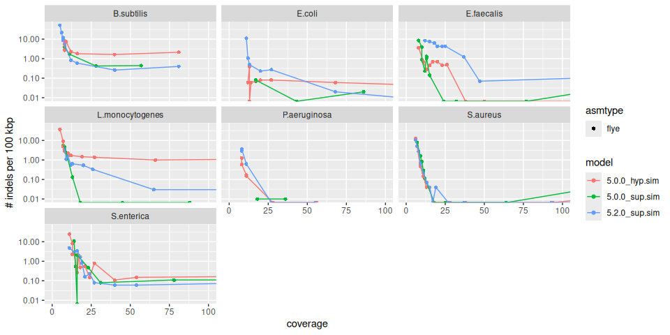
Mismatch rate vs coverage#

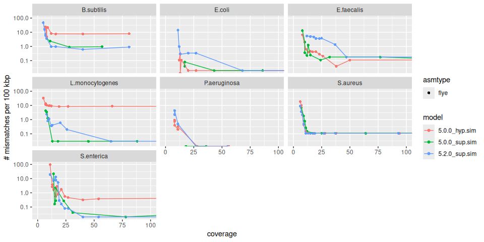
hac (v6.0.0) mode vs sup (v5.2.0)#
With the release of dorado 2.0.0 during LC2026 the plan was to replace the GPU intensive sup model with a faster HAC model that should beat the previous sup both in terms of speed and accuracy.
Indel rate vs coverage#

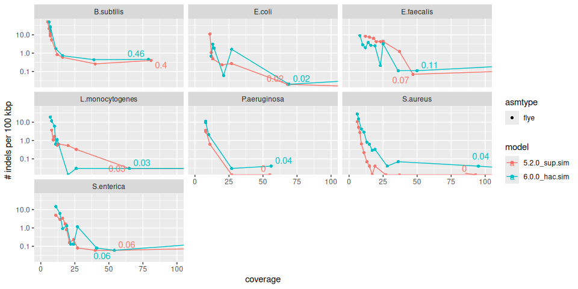
Mismatch rate vs coverage#

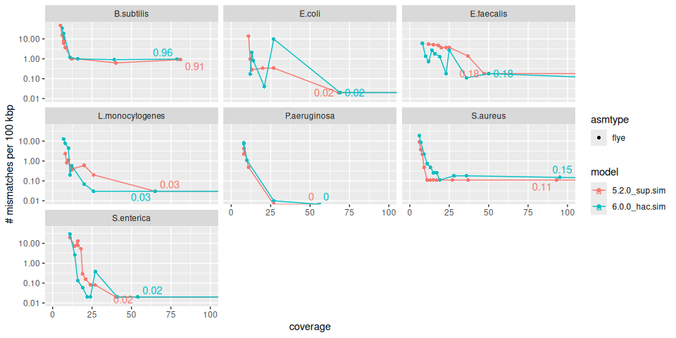
Assemblers#
- flye
- myloasm
- metamdbg
Mismatch rate vs coverage#

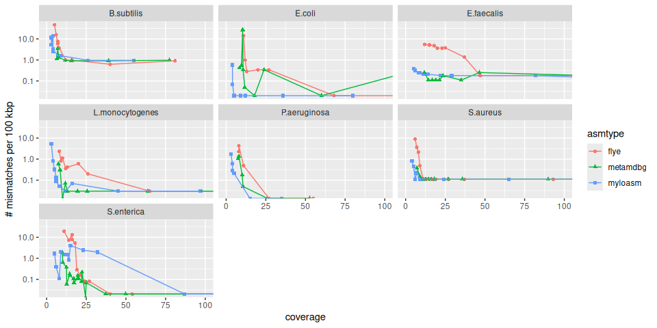
Indel rate vs coverage#

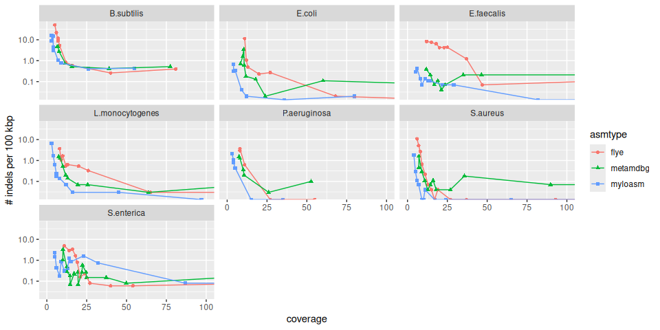
Materials and methods#
Here is a brief description of the tools used. For the exact commands check out the Snakefile in this repository (Snakemake v. 7.18.2).
DNA sequencing#
DNA sample was the Zymo Mock HMW standard. The DNA was prepared for sequencing using the nanopore ligation sequencing kit (SQK-LSK114) and sequenced on a R10.4.1 nanopore PromethION flowcell (FLO-PRO114HD) with the “400 bp/s” mode (5khz sampling).
Basecalling#
5 khz High Duplex PromethION data#
The reads were basecalled using dorado (v. 0.7.3) with fast, hac and sup accuracy mode using the 5.0.0 models.The reads were basecalled using dorado (v. 1.0.0) with fast, hac and sup accuracy mode using the 5.2.0 models and hyp model 5.0.0. The reads were basecalled using dorado (v. 2.0.0) with hac mode using the 6.0.0 model.
Read QC#
Reads were mapped to the updated zymo reference genomes (hopefully goes public soon) using minimap2 (v. 2.24), and QC information was obtained using NanoPlot (v. 1.41.0).
Assembly#
The reads were subsampled using seqtk (v. 1.3) and assembled using flye (v. 2.9.5), myloasm (v. 0.2.0), and metamdbg (v. 1.2).
Genome quality assessment#
The assembled contigs were compared to the reference contigs using QUAST (v. 5.2.0) and fastANI (v. 1.33).